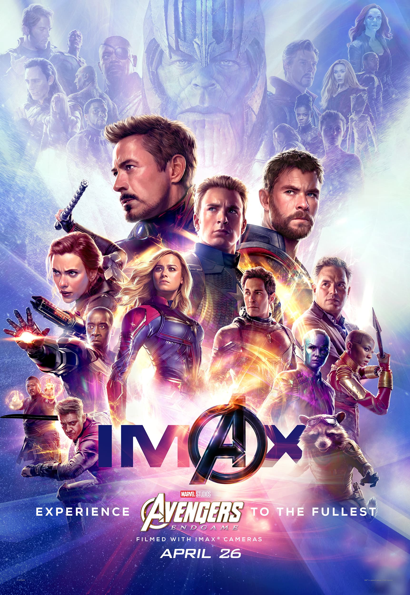

באטמן, הידוע גם בשם ברוס ווין, הוא דמות מוכרת מעולם גיבורי העל של די.סי.
הוא אדם עשיר שמחליט להילחם בפשע בגות'אם סיטי לאחר שראה את הוריו נרצחים לעיניו בילדותו.
בעזרת אינטליגנציה חריפה, מיומנויות קרב מעולות וטכנולוגיה מתקדמת, באטמן מתמודד עם מגוון של פושעים,
כולל אויבים מפורסמים כמו הג'וקר וקטוומן. דמותו מייצגת את המאבק הפנימי בין צדק אישי לבין חובות חברתיות,
ולעיתים קרובות מדברת על הקונפליקט בין אור לחושך.
איירון מן
איירון מן, או טוני סטארק, הוא גיבור על מעולם מארוול המשלב בין טכנולוגיה, כוח ועושר.
אחרי שנחטף על ידי טרוריסטים, טוני ממציא חליפה מתקדמת המאפשרת לו להילחם בפשע ולהגן על העולם.
הוא ידוע בהומור החכם שלו ובסגנון החיים המפואר, אך מתמודד גם עם קשיים אישיים ומוסריים.
איירון מן מייצג את השינוי האישי, הכוח של טכנולוגיה ואחריות על פעולותיו, גם כשזה קשה.
קפטן אמריקה
קפטן אמריקה, הידוע גם בשם סטיב רוג'רס, הוא גיבור על מעולם מארוול שנלחם למען צדק ואידיאלים.
אחרי שהוזרק בסרום שמעניק לו כוחות על, סטיב הופך לגיבור המוביל את הלוחמים נגד הנאצים במלחמת העולם השנייה.
קפטן אמריקה מייצג את ערכי הפטריוטיות, הכבוד והחברות, ומזכיר לנו שלפעמים הקרבה האישית היא מה שמוביל לניצחון הגדול.
הוא דמות שמאמינה באמונה עזה, במאבק למען צדק ובחשיבות של עמידה על עקרונות.
הנוקמים: מלחמת האינסוף
הנוקמים: מלחמת האינסוף
הוא סרט גיבורי-על אמריקאי שיצא ב-2018, והוא הסרט ה-19 ביקום הקולנועי של מארוול. בסרט זה, הנוקמים ושותפיהם עומדים מול תאנוס, הנבל הקוסמי שמטרתו להשיג את האבנים האינסופיות ולהשתמש בכוחן כדי לשנות את כל היקום. תאנוס מבצע את משימתו בדרכו המרשעת, תוך שהוא אוסף את האבנים אחת אחת, מה שמוביל לקרב עז שמערב את רוב גיבורי מארוול.
הסרט מציג את הנוקמים במאבק חסר רחמים כדי למנוע את השמדת חצי מהיקום, אבל הם נתקלים בקשיים גדולים. בסופו של דבר, תאנוס מצליח להשיג את כל האבנים ובזמן קרב ענק, הוא משנה את מאזן הכוחות ביקום בצורה מפתיעה.
הסרט נחשב לאחד הסרטים הגדולים ביותר של מארוול, עם סצנות קרב עוצרות נשימה והתרחשויות מרגשות, והוא סיים בהפתעה שמביאה את הדמויות לגורל קשה בסרט ההמשך "הנוקמים: סוף המשחק".
הנוקמים סוף משחק

הנוקמים: סוף המשחק
הוא סרט גיבורי-על אמריקאי שיצא ב-2019, ומסיים את סאגת "הנוקמים" ביקום הקולנועי של מארוול. הסרט עוקב אחרי הנוקמים שנותרו אחרי האירועים של "הנוקמים: מלחמת האינסוף", בהם הנבל תאנוס השמיד חצי מהיקום בעזרת האבנים האינסופיות. לאחר ההפסד הקשה, הנוקמים מנסים למצוא דרך לתקן את המצב ולחזור בזמן כדי לאסוף את האבנים ולמנוע את השמדת היקום. הסרט מציג את הקרב האפוסי האחרון בין הנוקמים לתאנוס ומסיים את סיפורם של דמויות מרכזיות כמו קפטן אמריקה, איירון מן והאף-מול-ת'ור.
הסרט נחשב לאחד הסרטים המצליחים ביותר בהיסטוריה של הקולנוע, עם קבלה חמה מצד הקהל והמבקרים.